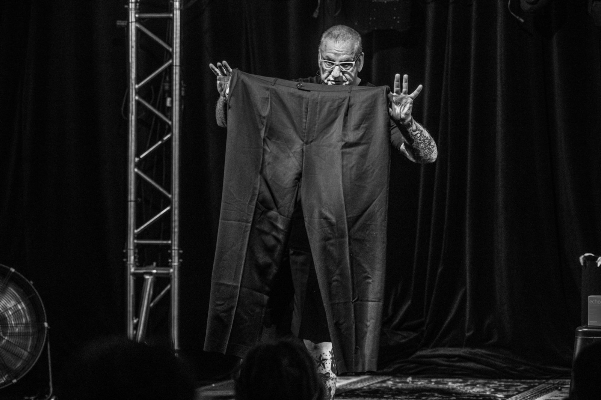

Tony's story, in brief.
A few milestones along the way.

Need to talk to someone now? Support lines
1981
Ventures off to do his own thing in music.
1991
Lands in Melbourne at 28 with $8,000 of debt, no home and no job prospects. Starts again from scratch.
New York
Trains in vinyl mastering in New York at Frankford Wayne.
Gold and platinum
Masters The Waifs' Up All Night (2x Platinum) and Shakaya's "Stop Calling Me" (Platinum). Across his career he also does the vinyl and remasters of Shihad's and The Feelers' NZ gold and platinum albums, and cuts vinyl for Nick Cave & the Bad Seeds and Jet.
2006 to 2026
Builds Jack the Bear's Deluxe Mastering in Brunswick.
The hard yards
Anxiety, addiction, major weight loss and divorce. In 2019 he starts talking about all of it on stage.
2020
Made peace with his father, despite the fact his dad had been deceased for 14 years.
His son
Loses his eldest 31-year-old son, Pierre, to suicide. He now speaks to other men about the impact suicide has on those left behind and how there's always a better way to navigate tough times without having to resort to something that can't be undone.
If this brings anything up for you, support is there. Support lines
Now
Sells the studio and steps up full time as a speaker to serve men and workplaces.